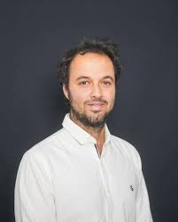

Spécialisé dans l'axe de recherche "Sécurité, Résilience et Confiance Numérique"
Après avoir obtenu un master 2 en Physique Théorique à l'ENS Ulm en 2010, il a obtenu en 2016 le diplôme de doctorat en Philosophie de la Physiqueau laboratoire SPHERE (Université Paris Sorbonne). Il a ensuite occupé un poste de post-doctorant au sein du projet ERC.
Khodor Hammoud a obtenu son doctorat en 2021 à l'Université de Paris-Cité. Pendant son doctorat, il a commencé sa carrière d'enseignant à l'EFERI en février 2020.
Spécialisé dans les "Données et Intelligence Artificielle" et Responsable de la majeure Data Engineering
Enseignante-chercheuse en informatique et responsable du département informatique
Elle a obtenu son diplôme d'ingénieur d'Etat en informatique en 2006 à l'Ecole nationale Supérieur d'Informatique (ESI) avant d'obtenir en 2010 son Magistère. en 2021 elle obtient son doctorat et elle rejoint par la suite l'EFREI en 2022.
Melek Elloumi est doctorant dans l'axe de rcherche "Données et Intelligence Artificielle"
Doctorant de l'axe de recherche "Données et Intelligence Artificielle"